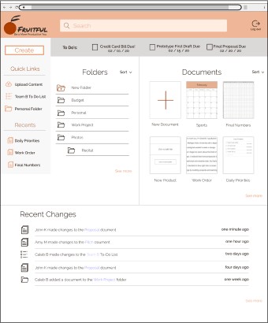
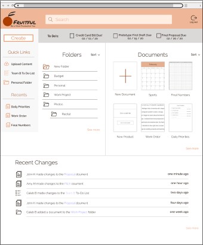

A platform to help users be more productive
I was the UX and UI designer for creation of Fruitful, a platform focused on increasing the productivity of users. The deliverables were the High Fidelity Mockups, Logo, Brand Style Guide and clickable prototype.
UX/UI Designer Researcher/Analyst
Style guide High-fidelity mockups (desktop and mobile) Clickable prototypes Logo Assets for developer handoff
Figma Draw.io Google Forms Invison
Even though the cloud storage and organization market has many big names, there is still an untapped niche. I needed to discover this market through research and determine the features that would best target this market.
Fruitful allows you to be more productive by spending less time looking for content or determining when collaboration has happened. It gives you reminders for your most urgent tasks to help you stay on top of your to-do list.
It was important to me to maintain the features that users already use becuase they will expect them, like creating and sharing content. Based on the survey, the avalible market is in productivity with tools like to-do lists and calanders.
With the research and data collected, I began building user personas. These two personas would be identified as potential users.
Customer Success Manager | Age: 37 | Chicago, IL
John is motivated by making sure he is excelling at his job. He is a manager and has to ensure his employees are performing up to his standards. He wants to be as efficient as he can with himself and his employees.
John is frustrated by not knowing what his employees have done, losing track of deadlines and not knowing where files are

Stay at home mother | Age: 30 | Denver, CO
Susan is motivated by being a good mother to her kids. This includes keeping track of their busy schedules and managing the household.
Susan is frustrated by double booking, not having an effective to do list and forgetting what she needs to do.
My analysis of market competetors Google Drive, Pinterest and Evernote showed that Fruitful will fill the productivity niche in the marketplace. From the competitive analysis I saw room in the market for great organization features which inspired the process of tagging documents and utilizing folders in the creation of content process.
I created detailed paths for creating content, onboarding and signing in for new and returning users. This detailed information architecture served as a template for the creation of the site.

Using my user flows, I started sketching out how the screens would look. For each user flow, I did three to four different sketch iterations. Next, I used Figma to turn these sketches into digital wireframes.

With the wireframe prototype, I had three in-person or remote usability tests. Each user had four tasks that they needed to complete. Task 1: Sign up for an account Task 2: Creating a new piece of content Task 3: Share content Task 4: Create a new reminder The participants were able to complete each of the steps. When users were asked to create a new document, they initally looked near the documents section. Users did find the create button but going forward I knew the documents and folders sections should have a new option.
The next step before creating the layout of Fruitful, was establishing the look and feel of the brand. This included choosing Permanent Marker as the brand font becuase it portrays the idea of writing a to-do list. Next, I chose Raleway as the type font becuase it is clean, simple and modern to counteract the permanent market. Raleway is very versatile and includes many different font weights. I chose orange as the brand color becuase of its association with productivity. Orange is a combination of the energy of yellow and intensity of red. I want users to feel productive, energized and have an intensity for their work when using Fruitful.

The fruitful logo began as a sketch, then underwent many iterations before the final logo was chosen. It was chosen becuase it represented the name, Fruitful, and the brand color, orange in just the right way.
Based on the wireframes, user testing and branding I then completed high fidelity mockups


Which do you prefer? 82% of users chose the first design.
 

Which do you prefer? 73% of users chose the second design.

Overall, I think the project was a success. I worked with users to discover that they were looking for a platform that made staying organized and increasing their productivity easier. Every decision I made for the project was based on making things easier for the user so they can be more productive. One thing that did not go well was I started out wanting the platform to include too many features. I had to make decisions to cut things so that the product was manageable. For example I wanted the platform to turn calendar items into to do list items but I decided to have the program create reminders instead. Going into the project I doubted that I would be able to find an available market but I was able to find the productivity market and dig into that more. I learned how much of an impact the user survey has on the project. It is really important to have the right questions and get enough responses. I was able to discover the productivity market through my survey and which features I should be focusing on. If I had more time I would like to make the platform more intuitive. One feature I was able to make more intuitive was including the recent changes on the dashboard. This makes it easy for users to know whether the document they are waiting for someone else to do their part on, has been updated or not without having to constantly check it. Something I would add going forward would be the option to set a notification that allows users to be notified when the document is edited.